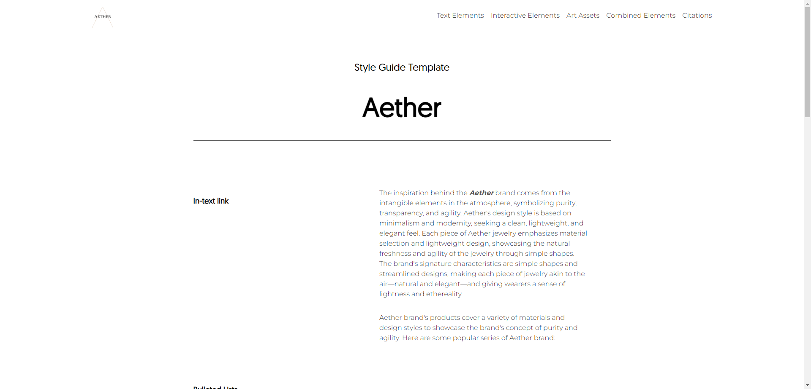

Web Design

This is a project for the design and development of a commercial website. My team and I first established the
website's style and brand positioning in this project. It is a luxury jewelry website with a minimalist design
approach. Once the main tone of the website was determined, we proceeded to design the interactive elements of
the web pages to ensure a consistent and appealing appearance across various devices. The specific development
of the website involved using HTML, CSS, and JavaScript for layout and animation effects. As for generating
images for the website, Photoshop and Figma were used as the primary tools.
Three Iterations
The website underwent three significant iterations, from its initial concept to the final product. We boldly poured our ideas into creating the website's style guide and a few basic pages during the first iteration. The layout of these pages was not mature, lacked balance, contained excessive white space, and lacked animation and interactivity. Some of these issues were discovered and addressed during the second iteration, while others were modified and perfected in the final major iteration. During the second iteration, we added a popup feedback feature after users submitted forms and took inspiration from numerous luxury and jewelry brand websites to maintain a clean and tidy homepage. We decided to use a classical painting as the main image for the homepage and designed a simple layout. However, we later realized that a single image on the homepage looked too sparse. Therefore, we incorporated a video on the website's homepage in the third iteration. After extensive searching on free video websites, we found a video that best matched the brand name and vibe. To ensure adaptive design with the video background, we converted the video into a webp format image animation. We were pleased with the result. In the final iteration, we fixed the form to make it more user-friendly and added a carousel effect to the product showcase page.
Style Guide
Old Home Page

Old Check Out